Вітальня · журнал «ДентАрт» 2024 №1
Кандидат медичних наук Світлана Хлєбас: «Постійно навчайтеся і будьте кращою версією себе!»
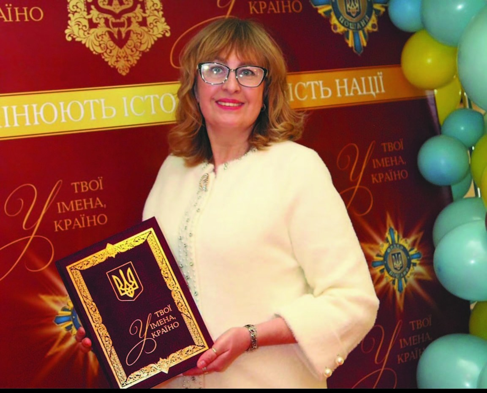
Сьогодні у Вітальні «ДентАрту» маємо нагоду поспілкуватися зі Світланою Василівною Хлєбас, лікарем-стоматологом вищої кваліфікаційної категорії, кандидатом медичних наук, асистенткою кафедри терапевтичної стоматології Національного університету охорони здоров'я України імені П. Л. Шупика, членкинею Координаційної ради ГО «Асоціація стоматологів України». Пані Світлану знають як талановиту викладачку, лекторку, що має понад півтори сотні доповідей в Україні та за її межами, медичного експерта національних телеканалів, а ще як волонтерку, котра допомагає зберегти здоров'я і життя українців у тяжкі часи війни із жорстокими рашистськими окупантами за нашу Свободу, Незалежність і найвищі загальнолюдські цінності.
Від кожного з нас залежить, яким буде наше майбутнє
– СЛАВА УКРАЇНІ і УКРАЇНСЬКИМ СТОМАТОЛОГАМ, які продовжують працювати в ім'я здоров'я людей у дуже складних умовах! І почнемо з Вашої викладацької діяльності. Як вдається забезпечувати ефективне навчання на кафедрі в умовах війни?
– ГЕРОЯМ СЛАВА! Від кожного з нас залежить, яким буде наше майбутнє. Але і в такі тяжкі часи війни ми маємо якісно надавати стоматологічну допомогу та підвищувати свою кваліфікацію. Звичайно, вебінари чи онлайн-навчання є нині досить зручною формою освіти, але в стоматології практичні навички потрібно відпрацьовувати у фантомному класі чи на робочому місці. І це стосується як освоєння нової методики, так і роботи на моделях, коли можна, наприклад, відчути пластичність фотополімерного матеріалу під час виконання реставрації. Та коли лунає сигнал повітряної тривоги і ми йдемо в укриття, то думки вже інші… Тому лекції інколи можна проводити в онлайн-режимі, а от семінарські чи практичні заняття – аудиторно.
Нині обов'язки завідувачки кафедри терапевтичної стоматології виконує доктор медичних наук, професор Ірина Петрівна Мазур, яка прагне, щоб наші слухачі отримували інформацію про сучасні наукові дослідження, нові методики та протоколи лікування. Тому наші викладачі постійно оновлюють навчальні матеріали. Також ми додатково надаємо матеріали на військову тематику. Важливо, що лікарі з розумінням ставляться до особливостей навчання у воєнний час. На нашій кафедрі також проводяться цикли спеціалізації та тематичного удосконалення для середнього медичного персоналу (медичних сестер, сестер медичних зі стоматології, гігієністів зубних) та зубних лікарів. Уже невдовзі бали БПР будуть набирати і наші помічники теж.
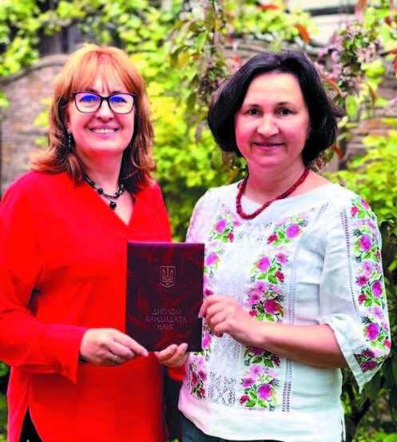
Спогади про студентські роки – найяскравіші!
– Світлано Василівно, спілкуючись з тими, кому передаєте свої знання і досвід, мабуть, згадуєте і своє навчання на стоматологічному факультеті Дніпропетровського медичного інституті (нині Дніпровський державний медичний університет). А що стало поштовхом до того, щоб обрати професію стоматолога?
– У кожного стоматолога своя причина, чому обрав саме цю професію. У мене це досить яскраві, причому в негативному смислі, спогади з дитинства: у 6 років мені видаляли молочний зуб, і було дуже боляче. Саме тоді я подумала, що стану гарним стоматологом і нікому не буду робити боляче. Усі ці роки намагаюся дотримувати слова.
Я закінчила середню школу в Черкасах, і найближчим до нас був Полтавський медичний інститут. Та моя перша спроба вступу була невдалою, і я пішла працювати санітаркою в обласну санепідемстанцію. Наступного року вступала в Дніпропетровський медичний інститут, але для вступу не вистачило пів бала. І коли вже вступила у вуз, то ставилася до навчання дуже серйозно і відразу стала відвідувати науковий гурток. Знання, отримані у вузі, стали міцною основою для подальшого розвитку і вдосконалення.
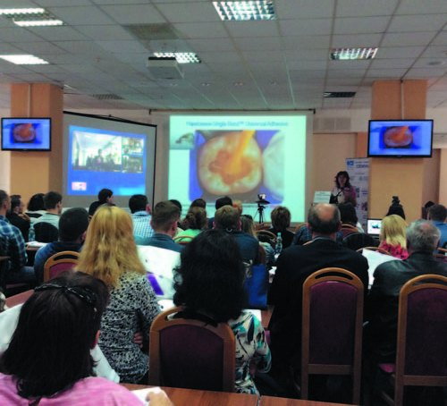
А ще в ті часи у вересні-жовтні всі студенти їздили в колгосп – допомагали збирати врожай. Можливо, такі поїздки стали однією з причин міцної дружби між нами. Саме тоді проявлялися особливості характеру чи таланти кожного з нас. Пісні під гітару, коли всі разом сиділи навколо вогнища, жарти, життєві історії… У нас на курсі навчалися хлопці, які воювали в Афганістані. Вони були небагатослівні, але весь час повторювали, що війна – це пекло. Їм важко давалося навчання, і пам'ятаю, що професори та викладачі додатково займалися з ними після занять. На жаль, багатьох з них уже немає…
А ще пригадую, як урок інтелігентності нам подав професор Сергій Євгенович Стебельський, прадід якого Максиміліан Осипович під час Кримської війни (1853-1856 роки) оперував у Севастополі разом з видатним хірургом Миколою Івановичем Пироговим. Усі студенти обожнювали професора Стебельського, для нас він був не тільки вченим-анатомом зі світовим ім'ям і чудовим лектором, який створював кольоровою крейдою на дошці анатомічні схеми за кілька хвилин, а ще й високоінтелігентною людиною.
Так от, якось Сергій Євгенович з дружиною ішли перед нами, а тут до зупинки під'їжджає трамвай. Ми хотіли побігти, щоб встигнути сісти в нього. Але ж попереду – сам Професор! Його дружина теж пришвидшила крок, та він узяв її під лікоть і сказав: «Дорога, це не останній трамвай у нашому житті!».
Кожні п'ять років, аж до повномасштабного вторгнення рашистів в Україну, ми, однокурсники, зустрічалися в Дніпрі, з'їжджалися-зліталися з усіх куточків Землі, і цю історію ми пригадували знову й знову. Спогади про студентські роки – найяскравіші!
Деканом нашого стоматологічного факультету був Ігор Сергійович Мащенко, відомий вчений-пародонтолог. Я займалася в науковому гуртку на кафедрі терапевтичної стоматології, і вже тоді ми мали можливість проводити і кюретаж, і шинування рухливих зубів. Уже тоді розуміли, наскільки важливим є комплексне лікування. Але в ті часи можливості лікаря-стоматолога, якщо порівнювати з нинішніми, були обмежені. Пам'ятаю, як наш професор ділився своїми знаннями і завжди казав: «Робіть так, як я, робіть краще за мене!».
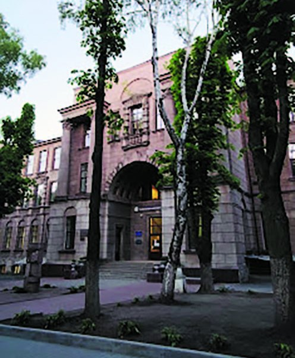
Пора труднощів – це пора нових можливостей…
– Яким був початок Вашого шляху лікаря? І на яких напрямках стоматологічної допомоги пацієнтам Ви мали найбільші успіхи?
– У 1987 році я закінчила стоматологічний факультет і за направленням поїхала в місто Павлоград Дніпропетровської області, де проходила інтернатуру за фахом «Терапевтична стоматологія», а потім працювала в міській стоматологічній поліклініці № 1. Хотілося всі отримані знання відразу ж втілити в практику. Разом з хірургами ми проводили відкритий кюретаж. Я шинувала рухливі зуби, проводила місцеву протизапальну терапію та вибіркове пришліфовування зубів. Чим шинували? Простою ліскою для риболовлі, яку заливали пластмасою. Нічого кращого тоді не було. Результати ж лікування були просто чудові! А от про художню реставрацію зубів ми тоді навіть не мріяли, бо «Евікрол» (композит хімічної полімеризації) був вершиною наших мрій.
Потім я переїхала в Черкаси, де тривалий час працювала в міській стоматологічній поліклініці № 2 і за сумісництвом – у приватному стоматологічному кабінеті. Кажуть, що пора труднощів – це пора нових можливостей. Саме ці складні роки і стали поштовхом для вивчення нових, сучасних методик лікування, а реалізувати отримані знання тоді можна було тільки в приватному стоматологічному закладі. Стоматологія стрімко розвивалася, в Україні з'явилися перші фотополімерні композити. Почалася нова ера прямої естетичної реставрації зубів із застосуванням біоміметичного методу Сергія Радлінського. Величезну роль зіграли курси нашого гуру стоматології та лекції з практичною демонстрацією. Цікаво було спробувати нові адгезиви і нові матеріали. Я їздила в Київ на семінари, конференції, майстер-класи, де ми обмінювалися досвідом і активно обговорювали отримані результати.
Саме потреба удосконалюватися і розвиватися привела мене в Інститут прогресивних стоматологічних технологій, який був одним із провідних медичних закладів України. Моїми основними напрямками були естетичні реставрації та ендодонтія. Згодом стала завідувачкою терапевтичного відділення. Це була гарна школа формування спеціаліста, співпраці зі світилами світової стоматології, а також тоді були зроблені перші кроки як викладача на курсах для лікарів. Основний девіз: «Нові технології – в життя».
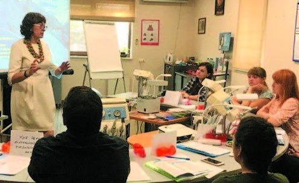
Застосовую всі сучасні світові методики прямої реставрації зубів
– Читала в інтернеті, що нині Ви ведете клінічний прийом у Стоматологічному науково-клінічному центрі «Стаміл». З чим найчастіше звертаються до Вас пацієнти і які сучасні методи лікування застосовуєте?
– У 2006 році в рамках розширення компанії «Стаміл» на чолі з її президентом Сергієм Анатолійовичем Горбанем було організовано ПП «Стоматологічний науково-клінічний центр «Стаміл», і я дуже вдячна Сергієві Анатолійовичу за співпрацю. Я стала головним лікарем, викладачем освітнього центру «Стаміл». У цей же час почалася робота над дисертацією.
Пацієнти звертаються з різними проблемами, але найчастіше – з потребою «спасти» зуб, травматично ушкоджений чи зруйнований в результаті каріозного процесу або його ускладнень. У клініці пацієнтам надається лікування, починаючи від професійної гігієни до протезування на імплантах. Звичайно, я застосовую у своїй практиці всі сучасні світові методики прямої реставрації зубів.
Також дуже приємно бачити, що пацієнти відповідальніше ставляться до свого здоров'я, виконують рекомендації і користуються сучасними гаджетами для догляду за ротовою порожниною. Можливість удосконалюватися, отримувати нові знання за кордоном, проводити наукові розробки та мати можливість втілювати їх у практичну діяльність, ділитися досвідом з колегами як в Україні, так і за кордоном важлива для кожного лікаря. Саме в СНКЦ «Стаміл» я змогла реалізувати ці завдання.
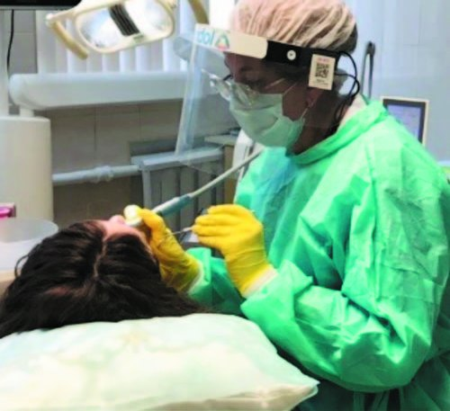
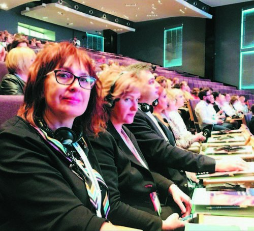
У 2012 році настала пора знову зробити вибір – і я перейшла працювати в Національну медичну академію післядипломної освіти (нині – НУОЗ України імені П. Л. Шупика). Але лікар без практики – то теоретик. Тому за сумісництвом веду прийом пацієнтів у СНКЦ «Стаміл». У 2020 році захистила кандидатську дисертацію на тему «Клініко-лабораторне обґрунтування застосування медикаментозної терапії при лікуванні деструктивних форм періодонтитів», яка виконувалася згідно з планом науково-дослідної роботи кафедри стоматології Національної медичної академії післядипломної освіти імені П. Л. Шупика. Мені було цікаво працювати над дисертацією, адже вперше було досліджено цитохімічні аспекти мікробних пейзажів при деструктивних процесах у періапікальній ділянці з використанням специфічних цитологічних барвників і візуалізацією за допомогою конфокального лазерного скануючого мікроскопа Leica TCS SPE на базі інвертованого мікроскопа DMi8 (Leica Microsystems). Також разом із співробітниками Інституту молекулярної біології і генетики НАН України Оленою Мошенець і Ольгою Юнг досліджено вміст позаклітинної ДНК та бактеріальних амілоїдних фібрил у матеріалі зіскобу тканин стінки кореневого каналу і вперше визначено загальну метаболічну активність та біологічні властивості мікробного біофільму в кореневих каналах. У рамках виконання дисертації розроблені медикаментозні композиції, які зменшують терміни лікування при періодонтиті. Саме за це дослідження у 2023 році я отримала відзнаку «Науковець року». Як лікареві, так і науковцеві, мені пощастило на мудру Вчительку і наукового керівника – доктора медичних наук, професора, президента Асоціації стоматологів України Ірину Петрівну Мазур.
– Маючи такий досвід знайомства з організацією стоматологічної допомоги в різних країнах, як Ви оцінюєте сучасний стан української стоматології? У чому ми кращі, а що варто вдосконалити, запозичивши досвід зарубіжних колег?
– Усі, хто повертається після вимушеного перебування за кордоном, підтверджують, що ми – кращі! Методики і матеріали – одні й ті ж в усьому світі. Але стоматологічне лікування є досить дороговартісним. Наша стоматологія потребує додаткових коштів, адже поширеність стоматологічних захворювань висока. А як же лікуватися нашим Захисникам, яким потрібно робити досить складні операції чи протезування? Звичайно, допомагають благодійні фонди. Важливим є питання впровадження страхової медицини. У всьому є свої переваги і недоліки. Ми маємо вивчати досвід наших зарубіжних колег і адаптувати його до наших умов. Просто копіювання чужих моделей гарного результату не дасть. У нас пацієнти не чекають місяцями чи навіть роками, щоб провести певні види лікування. Зарубіжні колеги мають вищу самооцінку, вміють «подати» і «продати» свою роботу. А ще за кордоном поважають особистий простір і цінують особистий час. Так, наприклад, в Америці: закінчили роботу – і всі робочі питання залишаються там, а вдома оточують увагою своїх рідних і близьких. У нас же, особливо після COVID-19, ці межі (робота – дім) є розмитими. Але ми ж пам'ятаємо: «Щоб гарно працювати – потрібно відновлюватися».
«І чужому научайтесь, й свого не цурайтесь»
– Ви навчалися не лише в Україні, а й стажувалися в Німеччині, США, Греції, Італії, Австрії... Що найцінніше дали Вам ці стажування за кордоном?
– Як лектор-консультант компаній 3М (СШA), ULTRADENT (США), VOCO (Німеччина), я проходила навчання за кордоном. Отриманими знаннями та досвідом ділюся з лікарями в Україні і за кордоном на майстер-класах. Органозберігаючі технології, мініінвазивне втручання, інноваційні методики – усе це тепер в авторських курсах з омолоджуючих (anti-age) реставрацій, відбілювання зубів, профілактики стоматологічних захворювань. Крім нових знань, дуже важливим було спілкування з колегами, коли крім професійних питань, обговорювали різні життєві ситуації. Розумієте, ми виконуємо багато складних стоматологічних втручань, але не завжди вміємо пояснити пацієнтові цінність виконаної роботи. Тому, пам'ятаєте, як писав Тарас Шевченко: «І чужому научайтесь, й свого не цурайтесь».
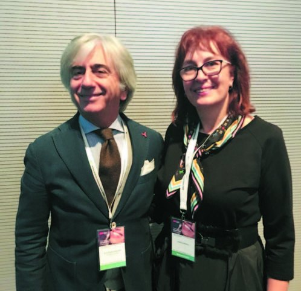
Щоб слухачам лекції було корисно, цікаво, весело і захопливо!
– Ви виступаєте з лекціями та проводите майстер-класи з профілактики стоматологічних захворювань, відбілювання зубів, реставрації, ендодонтії… Дуже широкий спектр Ваших викладацьких і наукових зацікавлень! Міждисциплінарний підхід в одній особі… Що спонукає Вас до такого багатогранного фахового погляду?
– Відповідь досить проста: за 36 років практичної роботи, за роки роботи над дисертацією, за період викладання зібрано багато корисної інформації, лайфхаків, якими хочеться поділитися з колегами-стоматологами. Пацієнт, який звертається до лікаря, хоче отримати висококваліфіковану допомогу, як кажуть, «від А до Я». Знання і досвід, поєднані між собою, приносять набагато більше користі. Як свідчить життя, найдієвішим способом навчання є освоєння методики на майстер-класі з відпрацюванням практичних навичок на моделі.
– У 2019 році Ви стали переможницею в номінації «Лікар-стоматолог» міжнародної премії Stella International Beauty Awards. Розкажіть про цю премію і про те, як стали переможницею.
– Асоціація стоматологів України подала мою кандидатуру. Ця премія – головна подія в галузі бьюті-індустрії, яка охоплює різні напрямки. Згідно з умовами конкурсу, кожен претендент подавав свої роботи, де відображалися зміни зовнішності людей в результаті проведеного лікування. Звичайно, я подала світлини своїх реставрацій. Із більш ніж 10 претендентів обирали трьох фіналістів, і так само, як при врученні премії Оскар, на сцені відкривали конверт і оголошували переможця, якого визначало високоповажне професійне журі. Це були хвилюючі моменти життя. Приємно було стояти на одній сцені зі своїми талановитими колегами. До речі, один з них згодом теж став переможцем у цій номінації.
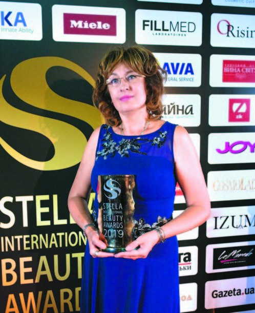
Також важливою подією у моєму житті став вступ в ISD (International College of Dentists) – високоповажне товариство, яке опікується питаннями стоматологічного здоров'я світу. Україна входить до 15-го Дистрикту, і очолює його Сергій Радлінський. Я бачила, з якою повагою, шаною ставляться до нього колеги з усіх країн. Зворушує підтримка стоматологів світу, яку вони надають Україні у цю тяжку для нас годину. Підходили колеги і розповідали, як вони нам допомагають. Професор із США продав свою клініку і половину отриманих коштів передав в Україну. Лікар з Британії і його колеги збирають і привозять гуманітарну допомогу. І таких історій чула багато. Дякуємо за допомогу всім, хто розуміє, якою страшною є війна!
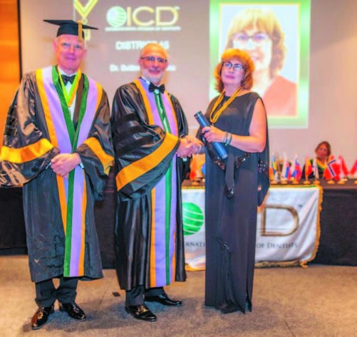
– У грудні минулого року Ви провели мотиваційну лекцію для п'ятикурсників стоматологічного факультету Київського медуніверситету, яка отримала захоплені відгуки. Що особливого було в цій лекції?
– Дякую за приємні відгуки! Лекція, присвячена покроковому протоколу реставрації зубів, була проведена не в академічному стилі, а у вигляді активного діалогу. Причому за правильні відповіді на питання учасники отримували відразу ж подарунки. Я прагну, щоб слухачам лекції було корисно, цікаво, весело і захопливо! Ми разом з п'ятикурсниками зображали реакцію відростка одонтобласта в дентинному канальці, якщо його пересушити, і т. д. На початку квітня знову запланована зустріч з нашими майбутніми лікарями, причому на них чекають суперкорисні сюрпризи!
– Ви виступали на багатьох українських телеканалах як експертка зі стоматології, даючи слушні поради телеглядачам і розвінчуючи міфи, що побутують серед населення і заважають збереженню здорової і красивої усмішки. Які з цих міфів найпоширеніші?
– Назву сім найпоширеніших міфів:
- Звертатися до стоматолога потрібно лише при зубному болю.
- Дітям не потрібно лікувати молочні зуби.
- Вагітним не можна взагалі лікувати зуби.
- Зубної щітки й пасти достатньо для гарної гігієни.
- Жорсткі зубні щітки краще видаляють наліт.
- Фтор у зубній пасті дуже шкідливий.
- Втрачений зуб не потрібно заміщувати.
- Брекети ефективні тільки для дітей і молоді.
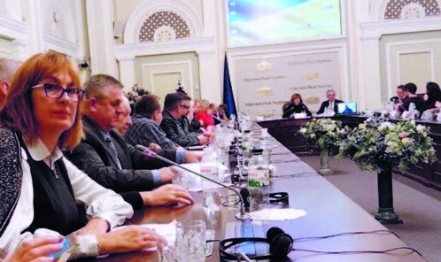
Головне – наша Перемога! І особисті перемоги!
– Стоматологічна спільнота України у ці тяжкі часи надає величезну допомогу і воїнам ЗСУ, і вимушеним переселенцям, усім, хто постраждав від терору рашистів. Ви, кажуть, теж активна волонтерка?
– Ви перебільшуєте мій внесок. Намагаюся, звичайно, допомагати, як і більшість українців. Буває так, що тільки дивом це і можна назвати. Судіть самі. Зателефонували хлопці, що потрібні дрони. Почали на Благодійний фонд оформлювати заявку, але ж на все це потрібен час. А тут якраз прийшла я на прийом у клініку і вирішила про всяк випадок запитати ще й у нашої лікарки, адже її чоловік теж волонтер. Зателефонували Володимирові Маєвському (БФ «Мольфар»). Він каже: «Є два дрони. Якщо прямо зараз буде заявка, то завтра «пташки» будуть на місці». Через 5 хвилин усі потрібні документи були готові, адже схожі робили перед цим, і заявка була виконана! Ось так, за 5 хвилин – два дрони! Хіба це не диво?
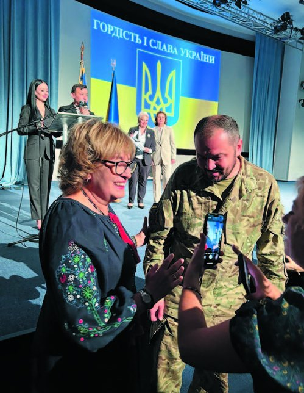
А ще у нас в університетській бібліотеці працює Ольга Хміль, яка надає свої вироби ручної роботи на благодійні аукціони для збору коштів на ЗСУ. Її син, якому в 2022 році було лише 8 років, робить «Ведмедики для ЗСУ» – такі маленькі талісманчики, до яких ще одна співробітниця плете з намолених ниток браслети. Скільки вже є зібраних історій, як ці браслети відводили біду! Ми донатимо Глібу, а він з мамою на виручені кошти купує для наших хлопців те, в чому є потреба. Ведмедиків і браслети ми даруємо нашим мужнім воїнам, і вони завжди усміхаються, коли отримують їх.
Але є ще й суто людські контакти чи ситуації, коли потрібно дуже швидко вирішувати і діяти. У пам'яті зустріч з нашою колегою – лікарем-стоматологом, волонтеркою Тетяною Бондар. Привезли невелику допомогу в шпиталь, а тут з'ясувалося, що вже наступного дня на «нуль» їхатиме машина, то всі ліки ми тут же і відправили. Я партнерка Міжнародного благодійного фонду «Незламна українська нація», який з 2014 року підтримує наших Захисників. Зустрічі і співпраця з такими неординарними Людьми – це справжній подарунок Долі.
До наших волонтерських заходів ми долучаємо всіх охочих, хто готовий робити добрі справи. Насправді багато людей об'єднуються, щоб наближати нашу Перемогу. Завжди пам'ятаймо: «ТІЛЬКИ РАЗОМ МИ – СИЛА!».
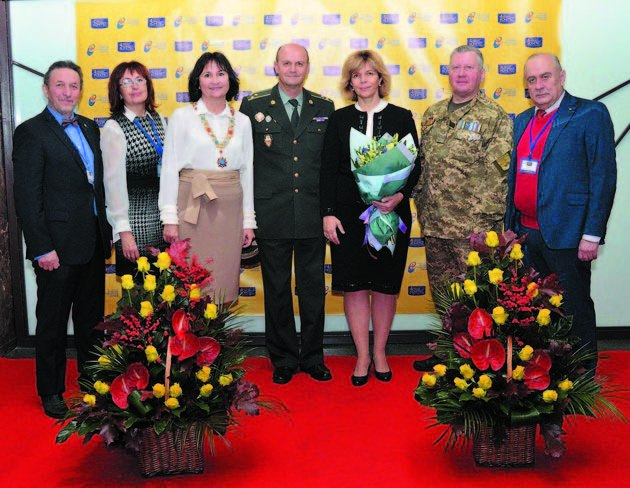
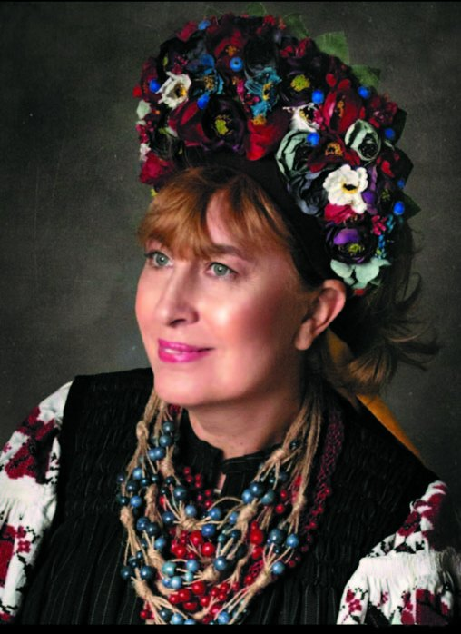
Досвід, співпраця, підтримка – гасло української наукової спільноти. Разом – ми сила!
– Шановна Світлано Василівно, Вашу працю, Ваші знання і вміння їх передавати молодому поколінню стоматологів суспільство цінує, про що свідчать Ваші нагороди, зокрема медаль для медичних працівників «Знання, душу, серце – людям», орден Святої Аполлонії, національні відзнаки «Орден пошани», «Берегиня України», «Гордість і слава України», «Науковець року» та інші. Тож побажаємо Вам нових успіхів і в лікарській практиці, і у викладацькій, лекторській роботі, і в громадській діяльності! І традиційно на закінчення – Ваші побажання колегам…
– Побажань дуже багато! Та передусім хочу подякувати колегам-стоматологам, котрі відгукнулися на прохання про допомогу нашим пацієнтам, які переїхали в західні області чи виїхали за межі України. Подякувати всім, хто допомагає нашим Захисникам і Захисницям!
А тепер – побажання. Головне – наша Перемога! І особисті перемоги! Будьте здорові! Хай ваша праця приносить вам задоволення, радість і відчуття окриленості! Постійно навчайтеся і будьте кращою версією себе! Ніколи не зупиняйтеся: досягли однієї мети, рухайтеся до наступної! Активно включайтеся в життя нашої стоматологічної спільноти! Мрійте! Втілюйте в життя свої дитячі мрії! Оточуйте себе тими людьми, з якими вам добре і які підтримують вас! І хай кожен день вашого життя буде неповторним і унікальним!